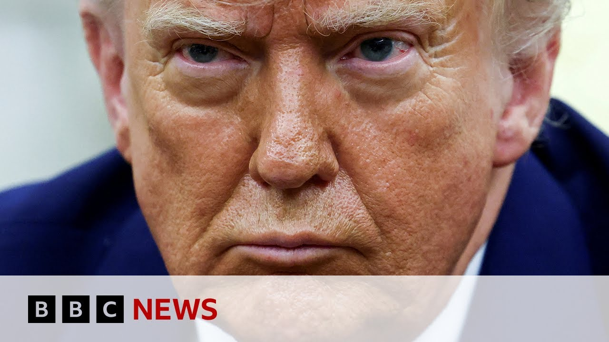

【美国将对钢铁和铝进口关税翻倍至50%，唐纳德·特朗普宣布 | BBC新闻】
Summary: Donald Trump announces plans to double US steel import tariffs to 50%, aiming to protect the domestic steel industry, despite legal challenges and potential global trade tensions.
摘要： 唐纳德·特朗普宣布计划将美国钢铁进口关税提高至50%，旨在保护国内钢铁行业，尽管面临法律挑战和潜在的全球贸易紧张局势。

⏱️ Estimated Reading Time: 7 min
Donald Trump has told a rally at a US steel plant in Pennsylvania that he intends to double US steel import tariffs to 50%.
唐纳德·特朗普在宾夕法尼亚州一家美国钢铁厂的集会上表示，他打算将美国钢铁进口关税提高至50%。
The president said the increase would offer the country's steel industry more security and vowed to stop any countries getting around the new rate.
总统表示，这一增长将为美国钢铁行业提供更多保障，并誓言阻止任何国家绕过新税率。
The White House said the higher levies would take effect next week.
白宫表示，更高的关税将于下周生效。
It comes after a federal appeals court granted the temporary suspension of a lower court's trade ruling that the bulk of Mr. Trump's global tariffs were illegal.
此前，联邦上诉法院暂时中止了下级法院的一项贸易裁决，该裁决认为特朗普的大部分全球关税是非法的。
We are going to be imposing a 25% increase.
我们将实施25%的增长。
We're going to bring it from 25% to 50% the tariffs on steel into the United States of America, which will even further secure the steel industry in the United States.
我们将把美国钢铁关税从25%提高到50%，这将进一步保障美国的钢铁行业。
Nobody's going to get around that.
没有人能绕过这一点。
Our North America correspondent Jake is following developments.
我们的北美记者杰克正在跟踪事态发展。
For several weeks, it appeared that Mr. Trump was climbing down from his tariff regime, either lowering the tariffs or suspending them to give room to strike deals with trading partners, but this sudden announcement at the steel meal in Pennsylvania.
几周来，特朗普似乎正在从他的关税制度中退缩，要么降低关税，要么暂停关税，以便为与贸易伙伴达成协议留出空间，但在宾夕法尼亚州的钢铁餐会上突然宣布了这一消息。
It appears Mr. Trump is reigniting the trade war with countries, not only China, but his allies, too.
看来特朗普正在重新点燃与各国的贸易战，不仅是中国，还有他的盟友。
We heard from Canada and Australia uh quickly denouncing this latest tariff.
我们听到加拿大和澳大利亚迅速谴责这一最新关税。
We heard from a trade minister of Australia calling it economic self harm.
我们听到澳大利亚一位贸易部长称这是经济自残。
And Mr. Trump is promising that this tariffs will uh save America's steel industry from what he calls shoddy steel from Shanghai.
特朗普承诺，这些关税将拯救美国的钢铁行业，免受他所谓的来自上海的劣质钢铁的影响。
The the increased cost of importing this this steel will likely be passed on to American consumers and it could even set off another round of retaliation from other countries.
进口这种钢铁的增加成本可能会转嫁给美国消费者，甚至可能引发其他国家的又一轮报复。
I mean, China has been negotiating with America since the two sides have uh slept astronomical amount of tariffs on each other and earlier this month they have had a breakthrough in negotiation in Geneva where both sides have decided to bring down the tariffs to manageable levels.
我的意思是，中国一直在与美国谈判，因为双方都对彼此征收了天文数字的关税，而本月早些时候，他们在日内瓦的谈判取得了突破，双方决定将关税降至可控水平。
But what we heard in the last 24 hours is that two sides pointing fingers at each other accusing the other side of breaking the promises.
但在过去24小时里，我们听到的是双方互相指责对方违背承诺。
So for China, the number one steel manufacturer in the world, uh this news from Pennsylvania won't be taken kindly.
因此，对于世界第一大钢铁生产国中国来说，宾夕法尼亚州的这一消息不会受到欢迎。
And where are we now in terms of the court process with these appeals?
在法院对这些上诉的审理过程中，我们现在处于什么阶段？
Because that's been quite a confusing picture as well in the last couple of days, hasn't it?
因为在过去几天里，情况也相当混乱，不是吗？
Exactly.
确实如此。
For the last few days, we heard the back and forth between courts.
在过去几天里，我们听到了法院之间的来回交锋。
So the several days ago, a court in Manhattan have ruled that Mr. Trump's liberation day uh tariffs on each countries around the world is in fact illegal and suspended Mr. Trump's ability to uh bring back bring them down again in July.
几天前，曼哈顿一家法院裁定，特朗普对世界各国的解放日关税实际上是非法的，并暂停了特朗普在7月再次降低关税的能力。
And we also heard from the federal appeals court now suspending that.
我们还听到联邦上诉法院现在暂停了这一裁决。
So while the the tariffs on each country is illegal, uh Mr. Trump is continuing to collect fees on the tariffs.
因此，尽管对每个国家的关税是非法的，特朗普仍在继续征收关税费用。
So, it's a little confusing, but uh the the the that lawsuit did not uh concern itself with these tariffs on specific industry.
所以，这有点令人困惑，但该诉讼并未涉及这些针对特定行业的关税。
So, industries like uh steel, aluminium, and auto automobile were not impacted by that court order.
因此，钢铁、铝和汽车等行业并未受到该法院命令的影响。
So, it really feels like Mr. Trump is defying the court as well as defying China with one free hand still has.
因此，这确实让人觉得特朗普是在藐视法院，同时也在用他仍然拥有的自由之手藐视中国。
So, uh, slapping tariffs like steel is still one tool in his toolbox that he's now bringing out and using it to relitigate this trade war.
因此，征收钢铁关税仍然是他工具箱中的一个工具，他现在正拿出来用它来重新挑起这场贸易战。
Now, many businesses have been talking about the uncertainty caused by the changes in in tariffs.
现在，许多企业都在谈论关税变化带来的不确定性。
What do we expect the fallout to be economically from from this latest round?
我们预计这一轮关税在经济上会带来什么后果？
Many companies will have a more difficult time because the steel prices, it has already gone up more than 15% since President Trump came into power and we're expecting it to rise even further.
许多公司将面临更困难的时期，因为自特朗普总统上任以来，钢铁价格已经上涨了15%以上，我们预计还会进一步上涨。
And the global trade uh trade network is quite complicated and this trade uh increased tariffs on trade is expected to go into effect just one week in the future.
全球贸易网络相当复杂，而这一贸易关税的增加预计将在一周后生效。
So it's going to be a very difficult time for these companies and these countries around the world to scramble uh to uh deal with this this latest news which was really surprised to everybody and what we're expecting is this market which is was expecting this tariffs regime to wind down and maybe even go away soon.
因此，对于这些公司和世界各国来说，应对这一最新消息将是一段非常困难的时期，这一消息让所有人都感到意外，而我们预计市场原本预计这一关税制度会逐渐减弱甚至很快消失。
So the market has been boyed a little bit.
因此，市场已经受到了一些提振。
Uh but come come Monday, we'll have to see how this market reacts to this added uncertainty.
但到了周一，我们将不得不看看市场对这种额外的不确定性作何反应。